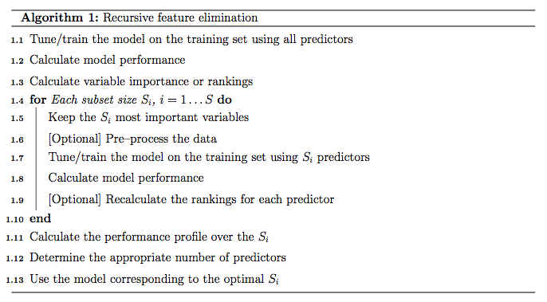
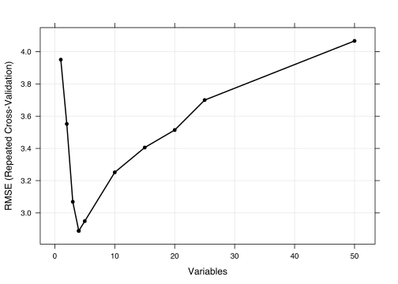
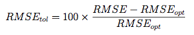
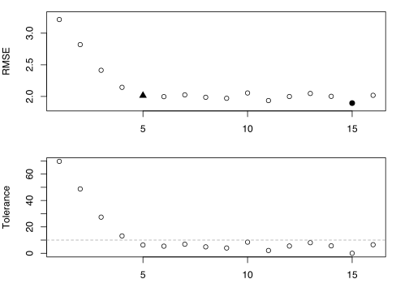
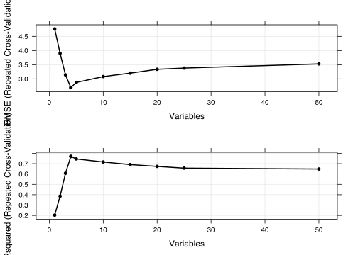
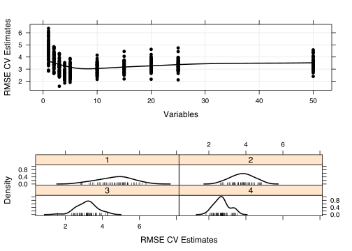
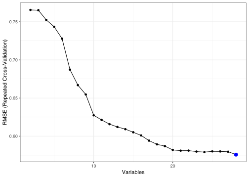

20 Recursive Feature Elimination
Contents
- Feature Selection Using Search Algorithms
- Resampling and External Validation
- Recursive Feature Elimination via
caret - An Example
- Helper Functions
- The Example
- Using a Recipe
20.1 Backwards Selection
First, the algorithm fits the model to all predictors. Each predictor is ranked using it’s importance to the model. Let S be a sequence of ordered numbers which are candidate values for the number of predictors to retain (S1 > S2, …). At each iteration of feature selection, the Si top ranked predictors are retained, the model is refit and performance is assessed. The value of Si with the best performance is determined and the top Si predictors are used to fit the final model. Algorithm 1 has a more complete definition.
The algorithm has an optional step (line 1.9) where the predictor rankings are recomputed on the model on the reduced feature set. Svetnik et al (2004) showed that, for random forest models, there was a decrease in performance when the rankings were re-computed at every step. However, in other cases when the initial rankings are not good (e.g. linear models with highly collinear predictors), re-calculation can slightly improve performance.

One potential issue over-fitting to the predictor set such that the wrapper procedure could focus on nuances of the training data that are not found in future samples (i.e. over-fitting to predictors and samples).
For example, suppose a very large number of uninformative predictors were collected and one such predictor randomly correlated with the outcome. The RFE algorithm would give a good rank to this variable and the prediction error (on the same data set) would be lowered. It would take a different test/validation to find out that this predictor was uninformative. The was referred to as “selection bias” by Ambroise and McLachlan (2002).
In the current RFE algorithm, the training data is being used for at least three purposes: predictor selection, model fitting and performance evaluation. Unless the number of samples is large, especially in relation to the number of variables, one static training set may not be able to fulfill these needs.
20.2 Resampling and External Validation
Since feature selection is part of the model building process, resampling methods (e.g. cross-validation, the bootstrap) should factor in the variability caused by feature selection when calculating performance. For example, the RFE procedure in Algorithm 1 can estimate the model performance on line 1.7, which during the selection process. Ambroise and McLachlan (2002) and Svetnik et al (2004) showed that improper use of resampling to measure performance will result in models that perform poorly on new samples.
To get performance estimates that incorporate the variation due to feature selection, it is suggested that the steps in Algorithm 1 be encapsulated inside an outer layer of resampling (e.g. 10-fold cross-validation). Algorithm 2 shows a version of the algorithm that uses resampling.
While this will provide better estimates of performance, it is more computationally burdensome. For users with access to machines with multiple processors, the first For loop in Algorithm 2 (line 2.1) can be easily parallelized. Another complication to using resampling is that multiple lists of the “best” predictors are generated at each iteration. At first this may seem like a disadvantage, but it does provide a more probabilistic assessment of predictor importance than a ranking based on a single fixed data set. At the end of the algorithm, a consensus ranking can be used to determine the best predictors to retain.

20.3 Recursive Feature Elimination via caret
In caret, Algorithm 1 is implemented by the function rfeIter. The resampling-based Algorithm 2 is in the rfe function. Given the potential selection bias issues, this document focuses on rfe. There are several arguments:
x, a matrix or data frame of predictor variablesy, a vector (numeric or factor) of outcomessizes, a integer vector for the specific subset sizes that should be tested (which need not to includencol(x))rfeControl, a list of options that can be used to specify the model and the methods for prediction, ranking etc.
For a specific model, a set of functions must be specified in rfeControl$functions. Sections below has descriptions of these sub-functions. There are a number of pre-defined sets of functions for several models, including: linear regression (in the object lmFuncs), random forests (rfFuncs), naive Bayes (nbFuncs), bagged trees (treebagFuncs) and functions that can be used with caret’s train function (caretFuncs). The latter is useful if the model has tuning parameters that must be determined at each iteration.
20.4 An Example
library(caret)
library(mlbench)
library(Hmisc)
library(randomForest)To test the algorithm, the “Friedman 1” benchmark (Friedman, 1991) was used. There are five informative variables generated by the equation

In the simulation used here:
n <- 100
p <- 40
sigma <- 1
set.seed(1)
sim <- mlbench.friedman1(n, sd = sigma)
colnames(sim$x) <- c(paste("real", 1:5, sep = ""),
paste("bogus", 1:5, sep = ""))
bogus <- matrix(rnorm(n * p), nrow = n)
colnames(bogus) <- paste("bogus", 5+(1:ncol(bogus)), sep = "")
x <- cbind(sim$x, bogus)
y <- sim$yOf the 50 predictors, there are 45 pure noise variables: 5 are uniform on \[0, 1\] and 40 are random univariate standard normals. The predictors are centered and scaled:
normalization <- preProcess(x)
x <- predict(normalization, x)
x <- as.data.frame(x)
subsets <- c(1:5, 10, 15, 20, 25)The simulation will fit models with subset sizes of 25, 20, 15, 10, 5, 4, 3, 2, 1.
As previously mentioned, to fit linear models, the lmFuncs set of functions can be used. To do this, a control object is created with the rfeControl function. We also specify that repeated 10-fold cross-validation should be used in line 2.1 of Algorithm 2. The number of folds can be changed via the number argument to rfeControl (defaults to 10). The verbose option prevents copious amounts of output from being produced.
set.seed(10)
ctrl <- rfeControl(functions = lmFuncs,
method = "repeatedcv",
repeats = 5,
verbose = FALSE)
lmProfile <- rfe(x, y,
sizes = subsets,
rfeControl = ctrl)
lmProfile##
## Recursive feature selection
##
## Outer resampling method: Cross-Validated (10 fold, repeated 5 times)
##
## Resampling performance over subset size:
##
## Variables RMSE Rsquared MAE RMSESD RsquaredSD MAESD Selected
## 1 3.950 0.3790 3.381 0.6379 0.2149 0.5867
## 2 3.552 0.4985 3.000 0.5820 0.2007 0.5807
## 3 3.069 0.6107 2.593 0.6022 0.1582 0.5588
## 4 2.889 0.6658 2.319 0.8208 0.1969 0.5852 *
## 5 2.949 0.6566 2.349 0.8012 0.1856 0.5599
## 10 3.252 0.5965 2.628 0.8256 0.1781 0.6016
## 15 3.405 0.5712 2.709 0.8862 0.1985 0.6603
## 20 3.514 0.5562 2.799 0.9162 0.2048 0.7334
## 25 3.700 0.5313 2.987 0.9095 0.1972 0.7500
## 50 4.067 0.4756 3.268 0.8819 0.1908 0.7315
##
## The top 4 variables (out of 4):
## real4, real5, real2, real1The output shows that the best subset size was estimated to be 4 predictors. This set includes informative variables but did not include them all. The predictors function can be used to get a text string of variable names that were picked in the final model. The lmProfile is a list of class "rfe" that contains an object fit that is the final linear model with the remaining terms. The model can be used to get predictions for future or test samples.
predictors(lmProfile)## [1] "real4" "real5" "real2" "real1"lmProfile$fit##
## Call:
## lm(formula = y ~ ., data = tmp)
##
## Coefficients:
## (Intercept) real4 real5 real2 real1
## 14.613 2.857 1.965 1.625 1.359head(lmProfile$resample)## Variables RMSE Rsquared MAE Resample
## 4 4 1.923763 0.9142474 1.640438 Fold01.Rep1
## 14 4 2.212266 0.8403133 1.845878 Fold02.Rep1
## 24 4 4.074172 0.5052766 3.095980 Fold03.Rep1
## 34 4 3.938895 0.3250410 2.992700 Fold04.Rep1
## 44 4 3.311426 0.6652186 2.195083 Fold05.Rep1
## 54 4 2.286320 0.6974626 1.840118 Fold06.Rep1There are also several plot methods to visualize the results. plot(lmProfile) produces the performance profile across different subset sizes, as shown in the figure below.
trellis.par.set(caretTheme())
plot(lmProfile, type = c("g", "o"))
Also the resampling results are stored in the sub-object lmProfile$resample and can be used with several lattice functions. Univariate lattice functions (densityplot, histogram) can be used to plot the resampling distribution while bivariate functions (xyplot, stripplot) can be used to plot the distributions for different subset sizes. In the latter case, the option returnResamp`` = "all" in rfeControl can be used to save all the resampling results. Example images are shown below for the random forest model.
20.5 Helper Functions
To use feature elimination for an arbitrary model, a set of functions must be passed to rfe for each of the steps in Algorithm 2.
This section defines those functions and uses the existing random forest functions as an illustrative example. caret contains a list called rfFuncs, but this document will use a more simple version that will be better for illustrating the ideas. A set of simplified functions used here and called rfRFE.
rfRFE <- list(summary = defaultSummary,
fit = function(x, y, first, last, ...){
library(randomForest)
randomForest(x, y, importance = first, ...)
},
pred = function(object, x) predict(object, x),
rank = function(object, x, y) {
vimp <- varImp(object)
vimp <- vimp[order(vimp$Overall,decreasing = TRUE),,drop = FALSE]
vimp$var <- rownames(vimp)
vimp
},
selectSize = pickSizeBest,
selectVar = pickVars)20.5.1 The summary Function
The summary function takes the observed and predicted values and computes one or more performance metrics (see line 2.14). The input is a data frame with columns obs and pred. The output should be a named vector of numeric variables. Note that the metric argument of the rfe function should reference one of the names of the output of summary. The example function is:
rfRFE$summary## function (data, lev = NULL, model = NULL)
## {
## if (is.character(data$obs))
## data$obs <- factor(data$obs, levels = lev)
## postResample(data[, "pred"], data[, "obs"])
## }
## <bytecode: 0x7fa726eefe08>
## <environment: namespace:caret>Two functions in caret that can be used as the summary funciton are defaultSummary and twoClassSummary (for classification problems with two classes).
20.5.2 The fit Function
This function builds the model based on the current data set (lines 2.3, 2.9 and 2.17). The arguments for the function must be:
x: the current training set of predictor data with the appropriate subset of variablesy: the current outcome data (either a numeric or factor vector)first: a single logical value for whether the current predictor set has all possible variables (e.g. line 2.3)last: similar tofirst, butTRUEwhen the last model is fit with the final subset size and predictors. (line 2.17)...: optional arguments to pass to the fit function in the call torfe
The function should return a model object that can be used to generate predictions. For random forest, the fit function is simple:
rfRFE$fit## function(x, y, first, last, ...){
## library(randomForest)
## randomForest(x, y, importance = first, ...)
## }For feature selection without re-ranking at each iteration, the random forest variable importances only need to be computed on the first iterations when all of the predictors are in the model. This can be accomplished using importance`` = first.
20.5.3 The pred Function
This function returns a vector of predictions (numeric or factors) from the current model (lines 2.4 and 2.10). The input arguments must be
object: the model generated by thefitfunctionx: the current set of predictor set for the held-back samples
For random forests, the function is a simple wrapper for the predict function:
rfRFE$pred## function(object, x) predict(object, x)For classification, it is probably a good idea to ensure that the resulting factor variables of predictions has the same levels as the input data.
20.5.4 The rank Function
This function is used to return the predictors in the order of the most important to the least important (lines 2.5 and 2.11). Inputs are:
object: the model generated by thefitfunctionx: the current set of predictor set for the training samplesy: the current training outcomes
The function should return a data frame with a column called var that has the current variable names. The first row should be the most important predictor etc. Other columns can be included in the output and will be returned in the final rfe object.
For random forests, the function below uses caret’s varImp function to extract the random forest importances and orders them. For classification, randomForest will produce a column of importances for each class. In this case, the default ranking function orders the predictors by the averages importance across the classes.
rfRFE$rank## function(object, x, y) {
## vimp <- varImp(object)
## vimp <- vimp[order(vimp$Overall,decreasing = TRUE),,drop = FALSE]
## vimp$var <- rownames(vimp)
## vimp
## }20.5.5 The selectSize Function
This function determines the optimal number of predictors based on the resampling output (line 2.15). Inputs for the function are:
x: a matrix with columns for the performance metrics and the number of variables, calledVariablesmetric: a character string of the performance measure to optimize (e.g. RMSE, Accuracy)maximize: a single logical for whether the metric should be maximized
This function should return an integer corresponding to the optimal subset size.
caret comes with two examples functions for this purpose: pickSizeBest and pickSizeTolerance. The former simply selects the subset size that has the best value. The latter takes into account the whole profile and tries to pick a subset size that is small without sacrificing too much performance. For example, suppose we have computed the RMSE over a series of variables sizes:
example <- data.frame(RMSE = c(3.215, 2.819, 2.414, 2.144,
2.014, 1.997, 2.025, 1.987,
1.971, 2.055, 1.935, 1.999,
2.047, 2.002, 1.895, 2.018),
Variables = 1:16)These are depicted in the figure below. The solid circle identifies the subset size with the absolute smallest RMSE. However, there are many smaller subsets that produce approximately the same performance but with fewer predictors. In this case, we might be able to accept a slightly larger error for less predictors.
The pickSizeTolerance determines the absolute best value then the percent difference of the other points to this value. In the case of RMSE, this would be

where RMSE{opt} is the absolute best error rate. These “tolerance” values are plotted in the bottom panel. The solid triangle is the smallest subset size that is within 10% of the optimal value.
This approach can produce good results for many of the tree based models, such as random forest, where there is a plateau of good performance for larger subset sizes. For trees, this is usually because unimportant variables are infrequently used in splits and do not significantly affect performance.
## Find the row with the absolute smallest RMSE
smallest <- pickSizeBest(example, metric = "RMSE", maximize = FALSE)
smallest## [1] 15## Now one that is within 10% of the smallest
within10Pct <- pickSizeTolerance(example, metric = "RMSE", tol = 10, maximize = FALSE)
within10Pct## [1] 5minRMSE <- min(example$RMSE)
example$Tolerance <- (example$RMSE - minRMSE)/minRMSE * 100
## Plot the profile and the subsets selected using the
## two different criteria
par(mfrow = c(2, 1), mar = c(3, 4, 1, 2))
plot(example$Variables[-c(smallest, within10Pct)],
example$RMSE[-c(smallest, within10Pct)],
ylim = extendrange(example$RMSE),
ylab = "RMSE", xlab = "Variables")
points(example$Variables[smallest],
example$RMSE[smallest], pch = 16, cex= 1.3)
points(example$Variables[within10Pct],
example$RMSE[within10Pct], pch = 17, cex= 1.3)
with(example, plot(Variables, Tolerance))
abline(h = 10, lty = 2, col = "darkgrey")
20.5.6 The selectVar Function
After the optimal subset size is determined, this function will be used to calculate the best rankings for each variable across all the resampling iterations (line 2.16). Inputs for the function are:
y: a list of variables importance for each resampling iteration and each subset size (generated by the user-definedrankfunction). In the example, each each of the cross-validation groups the output of the rank function is saved for each of the 10 subset sizes (including the original subset). If the rankings are not recomputed at each iteration, the values will be the same within each cross-validation iteration.size: the integer returned by theselectSizefunction
This function should return a character string of predictor names (of length size) in the order of most important to least important
For random forests, only the first importance calculation (line 2.5) is used since these are the rankings on the full set of predictors. These importances are averaged and the top predictors are returned.
rfRFE$selectVar## function (y, size)
## {
## finalImp <- ddply(y[, c("Overall", "var")], .(var), function(x) mean(x$Overall,
## na.rm = TRUE))
## names(finalImp)[2] <- "Overall"
## finalImp <- finalImp[order(finalImp$Overall, decreasing = TRUE),
## ]
## as.character(finalImp$var[1:size])
## }
## <bytecode: 0x7fa6f06cdc18>
## <environment: namespace:caret>Note that if the predictor rankings are recomputed at each iteration (line 2.11) the user will need to write their own selection function to use the other ranks.
20.6 The Example
For random forest, we fit the same series of model sizes as the linear model. The option to save all the resampling results across subset sizes was changed for this model and are used to show the lattice plot function capabilities in the figures below.
ctrl$functions <- rfRFE
ctrl$returnResamp <- "all"
set.seed(10)
rfProfile <- rfe(x, y, sizes = subsets, rfeControl = ctrl)
rfProfile##
## Recursive feature selection
##
## Outer resampling method: Cross-Validated (10 fold, repeated 5 times)
##
## Resampling performance over subset size:
##
## Variables RMSE Rsquared MAE RMSESD RsquaredSD MAESD Selected
## 1 4.667 0.2159 3.907 0.8779 0.20591 0.7889
## 2 3.801 0.4082 3.225 0.5841 0.21832 0.5858
## 3 3.157 0.6005 2.650 0.5302 0.14847 0.5156
## 4 2.696 0.7646 2.277 0.4044 0.08625 0.3962 *
## 5 2.859 0.7553 2.385 0.4577 0.10529 0.4382
## 10 3.061 0.7184 2.570 0.4378 0.13898 0.4106
## 15 3.170 0.7035 2.671 0.4423 0.15140 0.4110
## 20 3.327 0.6826 2.812 0.4469 0.16074 0.4117
## 25 3.356 0.6729 2.843 0.4634 0.16947 0.4324
## 50 3.525 0.6437 3.011 0.4597 0.17207 0.4196
##
## The top 4 variables (out of 4):
## real4, real5, real2, real1The resampling profile can be visualized along with plots of the individual resampling results:
trellis.par.set(caretTheme())
plot1 <- plot(rfProfile, type = c("g", "o"))
plot2 <- plot(rfProfile, type = c("g", "o"), metric = "Rsquared")
print(plot1, split=c(1,1,1,2), more=TRUE)
print(plot2, split=c(1,2,1,2))
plot1 <- xyplot(rfProfile,
type = c("g", "p", "smooth"),
ylab = "RMSE CV Estimates")
plot2 <- densityplot(rfProfile,
subset = Variables < 5,
adjust = 1.25,
as.table = TRUE,
xlab = "RMSE CV Estimates",
pch = "|")
print(plot1, split=c(1,1,1,2), more=TRUE)
print(plot2, split=c(1,2,1,2))
20.7 Using a Recipe
A recipe can be used to specify the model terms and any preprocessing that may be needed. Instead of using
rfe(x = predictors, y = outcome)an existing recipe can be used along with a data frame containing the predictors and outcome:
rfe(recipe, data)The recipe is prepped within each resample in the same manner that train executes the preProc option. However, since a recipe can do a variety of different operations, there are some potentially complicating factors. The main pitfall is that the recipe can involve the creation and deletion of predictors. There are a number of steps that can reduce the number of predictors, such as the ones for pooling factors into an “other” category, PCA signal extraction, as well as filters for near-zero variance predictors and highly correlated predictors. For this reason, it may be difficult to know how many predictors are available for the full model. Also, this number will likely vary between iterations of resampling.
To illustrate, let’s use the blood-brain barrier data where there is a high degree of correlation between the predictors. A simple recipe could be
library(recipes)
library(tidyverse)
data(BloodBrain)
# combine into a single data frame
bbb <- bbbDescr
bbb$y <- logBBB
bbb_rec <- recipe(y ~ ., data = bbb) %>%
step_center(all_predictors()) %>%
step_scale(all_predictors()) %>%
step_nzv(all_predictors()) %>%
step_pca(all_predictors(), threshold = .95) Originally, there are 134 predictors and, for the entire data set, the processed version has:
prep(bbb_rec, training = bbb, retain = TRUE) %>%
juice(all_predictors()) %>%
ncol()## [1] 28When calling rfe, let’s start the maximum subset size at 28:
bbb_ctrl <- rfeControl(
method = "repeatedcv",
repeats = 5,
functions = lmFuncs,
returnResamp = "all"
)
set.seed(36)
lm_rfe <- rfe(
bbb_rec,
data = bbb,
sizes = 2:28,
rfeControl = bbb_ctrl
)
ggplot(lm_rfe) + theme_bw()
What was the distribution of the maximum number of terms:
term_dist <-
lm_rfe$resample %>%
group_by(Resample) %>%
dplyr::summarize(max_terms = max(Variables))
table(term_dist$max_terms)##
## 27 28 29
## 7 40 3So… 28ish.
Suppose that we used sizes = 2:ncol(bbbDescr) when calling rfe. A warning is issued that:
Warning message:
For the training set, the recipe generated fewer predictors than the 130 expected
in `sizes` and the number of subsets will be truncated to be <= 28